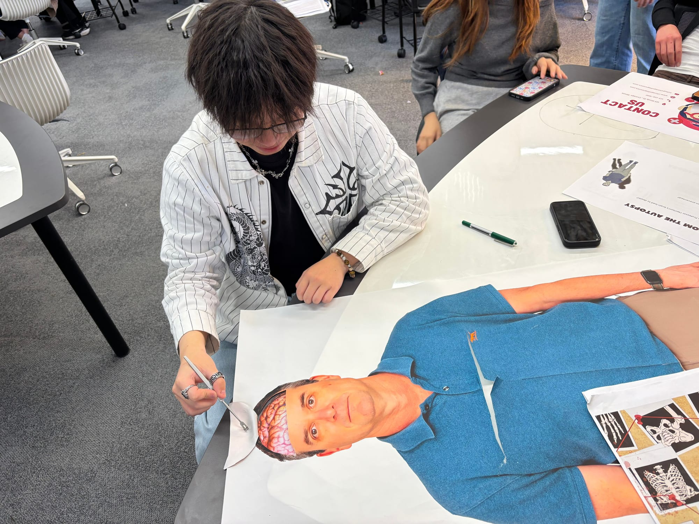

DEMO 01 · 摄影叙事
在 MONASH · 看见学习的另一面
课堂，也能
一起破案
观察线索 讨论问题 连接知识

生理学课堂活动照片：Monash Lens ｜ 设计演示
观察线索 讨论问题 连接知识

生理学课堂活动照片：Monash Lens ｜ 设计演示
把阅读变成下一次写作能用上的笔记
用自己的话写下：
作者最想说明什么？
记录方法、数据或例子，
同时标好页码。
它能支持哪个论点？
又能和哪篇文献对话？
正向展示页面
保留文字与书写空间
自建演示练习页 · 非官方试题
用一句自己的话归纳。
记录研究方法或关键例子，并标注页码。
写下拟支持的论点或准备讨论的差异。
实际制作时，换为用户提供的
真实 PDF 页面或清晰截图。